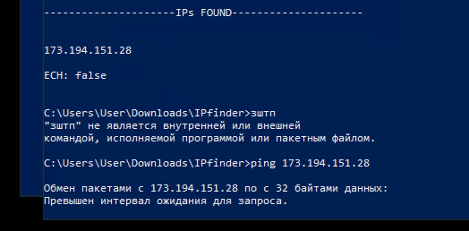
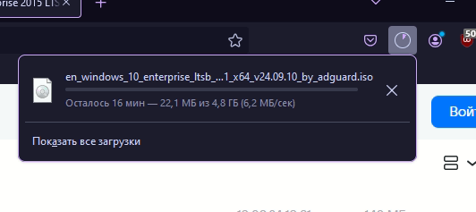

Перепробованы все конфигурации Zapret

Заблокированные адреса (не пингуются с запретом, нет доступных стратегий через blockcheck):
- rr11---sn-n8v7knes.googlevideo.com
- rr1---sn-npcnxu-v8ce.googlevideo.com
- rr5---sn-jvhnu5g-n8vk.googlevideo.com
- rr4---sn-n8v7zns7.googlevideo.com
Что можно предпринять ещё?
можиш тут понитересоваца Если опять перестал грузиться YouTube или его видео
ну или впн тока остался какие ещё вариканты
Смену провайдера. Что ты предпримешь, если даже не пингуются?
И почему GGC забугорные, российских не нашлось, что ли?
А это какой провайдер и регион?
сибсети, новосибирск. Пингуются только зарубежные видео.
И когда началось это непотребство?
Берем запрет с пробитием до зарубежа и пробуем. YTDisBystro v2.2, например
Помог 2.2, но надо было добавить параметр --wsize. Тогда грузятся все российские ролики.
Именно --wsize? Не --wssize 1:6 ?
Извиняюсь, конечно --wssize=1:6
Тогда попробуйте еще добавить --wssize-cutoff=n2
А толку если с ним уже работает? Надо проверить что-то?
Чтобы скорость не падала, это ограничитель. Да и проверить, да
чекни теперь скорость скачивания с включенным wssize)
Предположим без него, или это с каких-то ресурсов?

Немного офтоп, но все же спрошу. Кому-нибудь удалось вообще запустить гуглвидео без fake? Хитрой резкой например?
У меня на --dpi-desync=split запустилось, без fake
Но с wssize, верно?
Да
У меня все ссылки не тотально, только по сни.
Да
Ну это не совсем то. Я скорее имел ввиду чистую резку, без примесей вроде wssize. Хитрый сплит, или дисордер по позициям, например.
Понял-принял, кэп 
Теперь пингуются 
{kind=link}
Так что там с cutoff то?
толком ничего не поменялось, всё также работает, скорости что с ним, что без него не режутся
Да, что насчет “катоф”?
{kind=link}
Оставьте лучше с ним, раз все работает. Это глобальный параметр, незачем менять окно каждому запросу
А можно поподробнее что вы сделали?
del